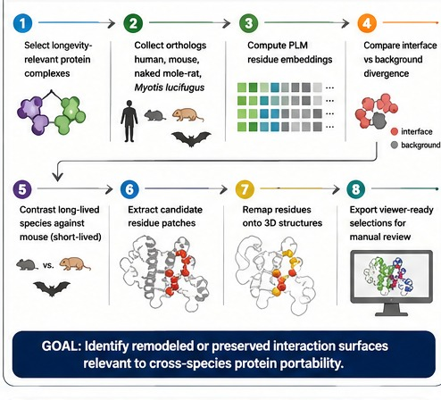
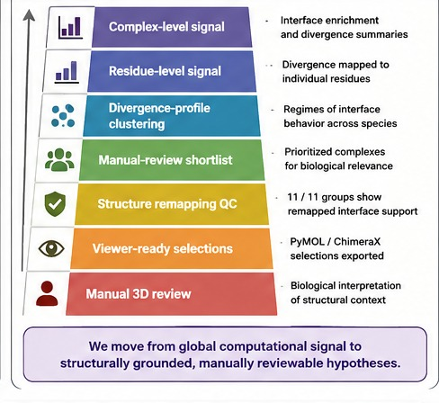

Longevity Port Pipeline
Protein–Protein Interface Divergence in Long-Lived Species: A Computational Signal Check Using PLM Embeddings
Preliminary data — proof-of-concept on 6 complexes, 2 long-lived species
1
Pipeline

2
Evidence Ladder

3
Results: 6 Complexes
1Significant
divergence
divergence
1Significant
constraint
constraint
11/11QC
pass
pass
Divergence
1nfi
RelA/p65 — IkBα
NF-kB / inflammation · Enrichment 1.30–1.32
Cohen's d = 0.66–0.70 ✓ Significant
Cohen's d = 0.66–0.70 ✓ Significant
Constraint
4xhu
PARP1 — Timeless
DNA repair / fork protection · Enrichment 0.39–0.43
Cohen's d = −0.91 to −1.01 ✓ Significant
Cohen's d = −0.91 to −1.01 ✓ Significant
| PDB | Complex | d | Sig? |
|---|---|---|---|
| 1nfi | RelA/p65 — IkBα | 0.66–0.70 | Yes |
| 4xhu | PARP1 — Timeless | −0.91–−1.01 | Yes |
| 8g57 | H2A — SIRT6 | 0.35–0.50 | No |
| 7s68 | PARP1 homodimer | 0.38 | No |
| 8f86 | SIRT6 — H2B | −0.34 | No |
| 8bhv | XLF — Ku70/80 | 0.39 | N/A |
4
1NFI · RelA/p65–IkBα · Interface Divergence
RelA/p65
chain C
●●●●
DIVERGENT
IkBα
chain E
ChimeraX render · PDB 1nfi

RelA/p65 (gray)
IkBα (blue)
Divergent interface residues
Interface residues shift ~30% more than non-interface.
Red spheres mark divergent positions at the binding surface.
d = 0.66 (NMR), 0.70 (bat). NF-kB regulatory interface remodeled in long-lived species.
5
4XHU · PARP1–Timeless · Interface Constraint
PARP1
chain C
●●●●
CONSERVED
Timeless
chain D
ChimeraX render · PDB 4xhu

PARP1 (gray)
Timeless (blue)
Conserved interface residues
Interface shifts ~60% less than non-interface.
Green spheres mark conserved positions at the binding surface.
d = −0.93 (NMR), −1.01 (bat). DNA repair interface preserved across species.
Key Take-Homes
Interface Divergence Detected
1nfi RelA/p65–IkBα: significant interface divergence in both long-lived species (d = 0.66–0.70). NF-kB regulatory surface remodeled.
Interface Constraint Confirmed
4xhu PARP1–Timeless: strong constraint (d = −0.91 to −1.01). DNA repair binding surface preserved across species — compatible with portability.
PLM Embeddings Work Both Ways
ESM C embeddings detect both divergent (rewiring risk) and constrained (preserved) interfaces — complementary evidence for portability.
11/11 QC Pass
All structure–species groups pass alignment-based residue remapping QC. 6 complexes screened, 2 statistically significant hits.